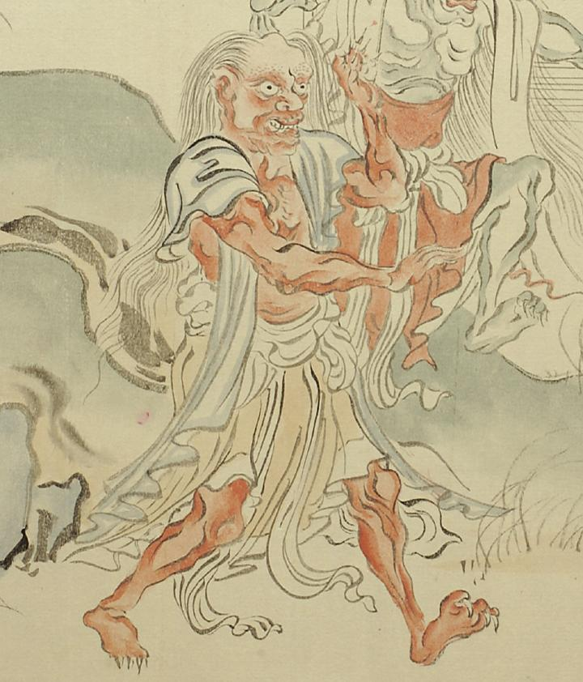

赤色の鬼。青い布を羽織り、茶色の腰布をまとっている。頭頂部は禿げ、側頭部から髪を長く垂らしている。口は歪んで裂け、牙が生えている。手足の指に鋭い爪が生えている。
出典：親書誌：U426_nichibunken_0056：土蜘蛛草紙；ツチグモソウシ／日付：2007／資源識別子：U426_nichibunken_0056_0005_0002
Copyright (c)2010- International Research Center for Japanese Studies, Kyoto, Japan. All rights reserved.